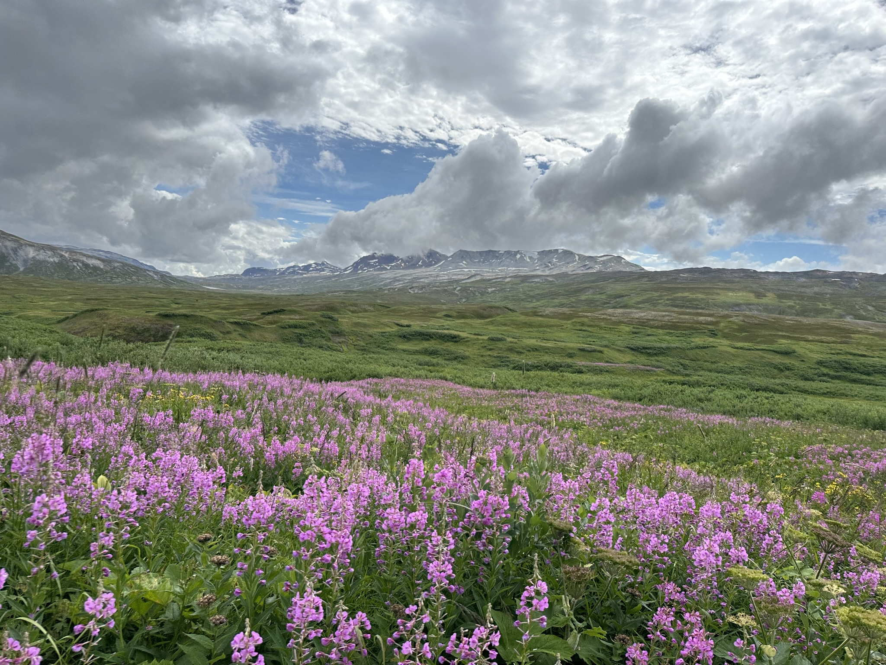
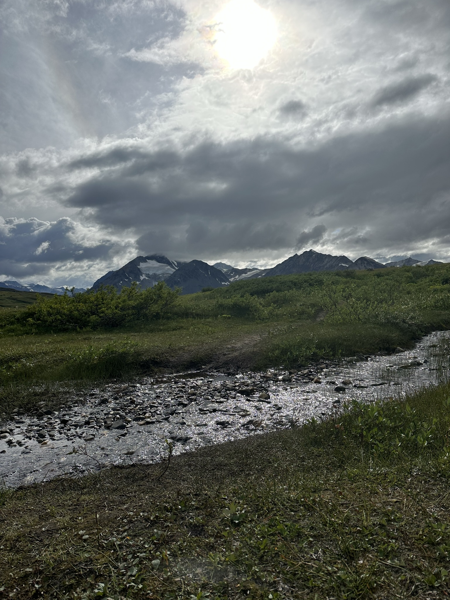
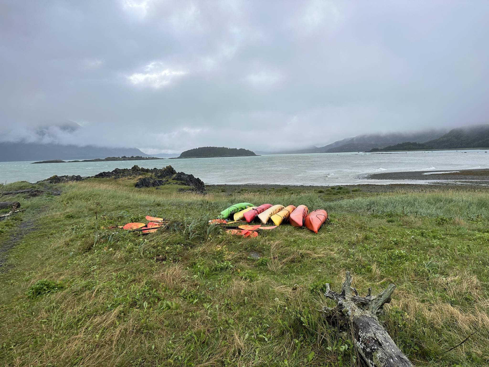

01
Scouting and the outdoors
I am an Eagle Scout and have been involved in Boy Scouts since the first grade. I love spending time outdoors, especially camping, hiking, and fishing.
01 / About me
This page will introduce the person, interests, and ideas behind the work.
Background
I’m from Staten Island, New York, where my interest in making and problem-solving first began.
At Port Richmond High School, my best friend and I started a makerspace at our school. That experience introduced me to the joy of building, experimenting, and learning through hands-on work. It set me on the path I’m following today: studying Mechanical Engineering Technology.
Photo journal



Interests
01
I am an Eagle Scout and have been involved in Boy Scouts since the first grade. I love spending time outdoors, especially camping, hiking, and fishing.
02
I started bowling during my freshman year of high school and quickly fell in love with the sport. I have bowled one 300 game and am a member of NJIT’s collegiate bowling team.
03
I also enjoy playing video games, especially factory-building and automation games that combine creativity, systems thinking, and problem-solving.
How I work
I like to focus on one part of a problem at a time and work toward a solution step by step.
I start with the simplest solution I can think of. If it does not work, I keep testing, learning, and trying more complex solutions until I understand the problem and find a way forward.